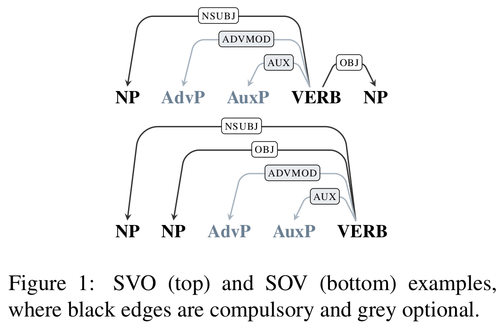
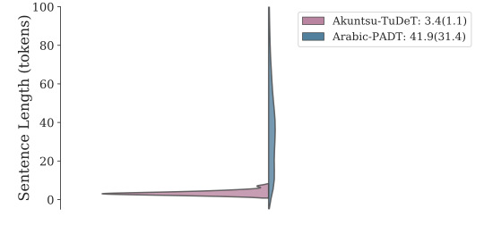
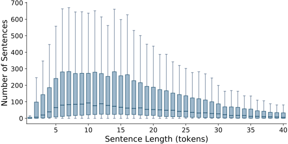
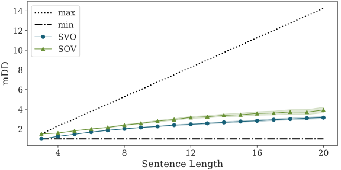
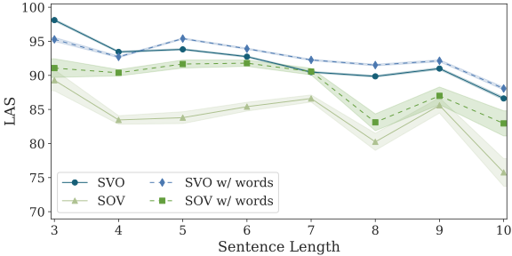
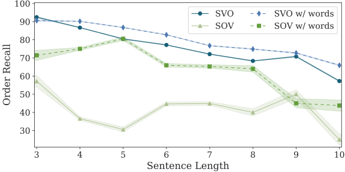
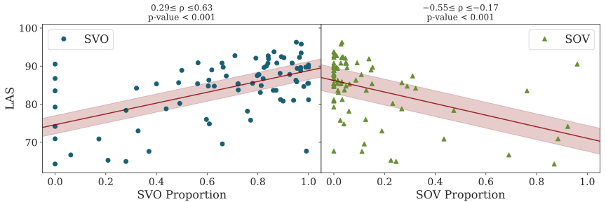
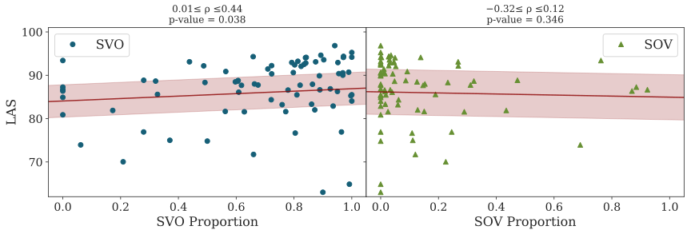
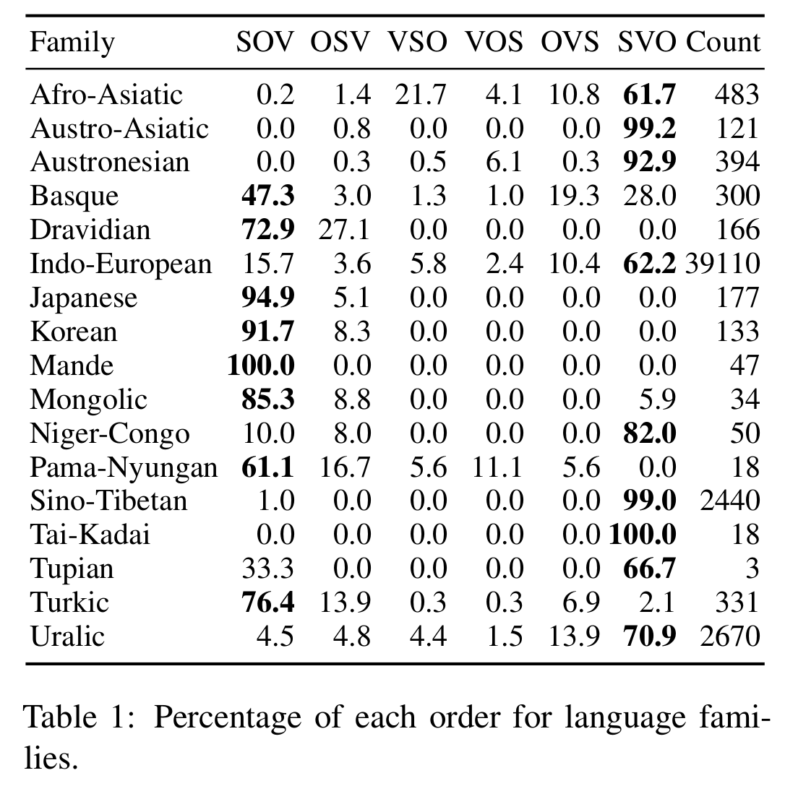

On the Parsing Difficulty of SOV and SVO Structures
Mark Anderson and Carlos Gómez-Rodríguez
UD Structure Definition

Sentence Length Differences


Sentence-length Binned Results: mDD

Sentence-length Binned Results: LAS

Sentence-length Binned Results: Order Recall

Global Effect


Data Imbalance
